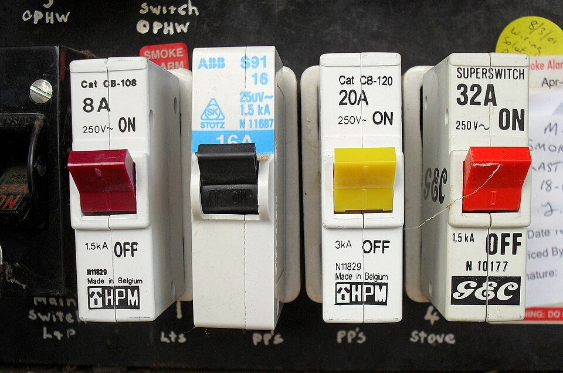
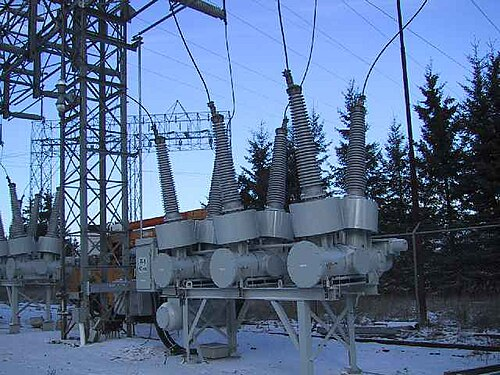

-
Circuit Breacker in Power System
2026-08-10
Circuit breaker in power system are quite similar to that in our houses circuit box , but details vary substantially depending on the voltage class, current rating and type of the circuit breaker.
A circuit breaker is an electrical safety device designed to protect an electrical circuit from damage caused by overcurrent (current in excess of that the equipment can safely carry ). Its basic function is to interrupt current flow to protect equipment and to prevent fire. Unlike a fuse, which interrupts once and then must be replaced, a circuit breaker can be reset (either manually or automatically) to resume normal operation.
The circuit breaker must first detect a fault condition. In a low-current circuits , low-voltage circuit breakers, this is usually done within the device itself.
Typically, the heating or magnetic effects of electric current are employed.
Circuit breakers for large currents or high voltages are usually arranged with protective relay pilot devices to sense a fault condition and to operate the opening mechanism.
Protective relays provide the brains to sense trouble, but as low-energy devices, they are not able to open and isolate the problem area of the power system. Circuit breakers and various types of circuit interrupters, including motor contactors and motor controllers, are used for this and provide the muscle for fault isolation.
Because of its characteristics, a circuit breaker is the essential switching device for protecting a high-voltage network, as it is the only device capable of interrupting a short-circuit current and thus preventing equipment connected to the network from being damaged by such a fault.Electric Arc
An electric arc in a power system is a continuous, luminous discharge of electric current through a thermally ionized plasma between two electrodes or conductors. It typically forms when the dielectric strength of the medium (such as air) is exceeded by a high voltage, causing the gas to ionize and become conductive, allowing current to jump across a gap.
The phenomenon is characterized by extremely high temperatures (often exceeding 10,000°C), intense light, etc.
In circuit breakers, arcs form when contacts separate under load.
Arc suppression is a method of attempting to reduce or eliminate an electrical arc. the arc is sustained by thermionic emission of electrons from the cathode and must be extinguished using methods like gas blast, oil immersion, or vacuum to prevent damage.
قاطع الدائرة الكهربائية في نظام القوى
يشبه قاطع الدائرة الكهربائية في أنظمة الطاقة الكهربائية نظيره في صناديق التوزيع الكهربائية المنزلية، إلا أن التفاصيل تختلف اختلافًا كبيرًا تبعًا لفئة الجهد الكهربائي، وتصنيف التيار، ونوع قاطع الدائرة.
قاطع الدائرة الكهربائية هو جهاز أمان كهربائي مصمم لحماية الدائرة الكهربائية من التلف الناتج عن التيار الزائد (التيار الذي يتجاوز قدرة الجهاز على تحمله بأمان). وتتمثل وظيفته الأساسية في قطع التيار لحماية الأجهزة ومنع نشوب الحرائق. وعلى عكس المصهر، الذي يقطع التيار مرة واحدة ثم يجب استبداله، يمكن إعادة ضبط قاطع الدائرة (يدويًا أو تلقائيًا) لاستئناف التشغيل الطبيعي.
يجب على قاطع الدائرة أولًا اكتشاف حالة العطل. في دوائر التيار المنخفض، وقواطع الدائرة ذات الجهد المنخفض، يتم ذلك عادةً داخل الجهاز نفسه. وعادةً ما تُستخدم التأثيرات الحرارية أو المغناطيسية للتيار الكهربائي.
أما قواطع الدائرة الكهربائية للتيارات العالية أو الجهود العالية، فعادةً ما تُجهز بأجهزة تحكم مرحلية لحماية الدائرة من العطل وتشغيل آلية الفتح.
تُوفّر المرحلات الوقائية القدرة على استشعار الأعطال، ولكن نظرًا لاستهلاكها المنخفض للطاقة، فهي غير قادرة على فتح وعزل منطقة العطل في نظام الطاقة. تُستخدم قواطع الدائرة الكهربائية وأنواع مختلفة من أجهزة الفصل، بما في ذلك موصلات المحركات ووحدات التحكم في المحركات، لهذا الغرض، وتُوفّر القدرة على عزل الأعطال.
بفضل خصائصها، يُعد قاطع الدائرة الكهربائية جهاز الفصل الأساسي لحماية شبكة الجهد العالي، فهو الجهاز الوحيد القادر على قطع تيار قصر الدائرة، وبالتالي منع تلف المعدات المتصلة بالشبكة نتيجةً لهذا العطل.
القوس الكهربائي
القوس الكهربائي في نظام الطاقة هو تفريغ مستمر ومضيء للتيار الكهربائي عبر بلازما متأينة حراريًا بين قطبين كهربائيين أو موصلين. يتشكل عادةً عندما يتجاوز الجهد العالي قوة العزل الكهربائي للوسط (مثل الهواء)، مما يؤدي إلى تأين الغاز وتحوّله إلى موصل، سامحًا للتيار بالقفز عبر الفجوة.
تتميز هذه الظاهرة بدرجات حرارة عالية للغاية (تتجاوز غالبًا 10000 درجة مئوية)، وضوء شديد، وما إلى ذلك.
في قواطع الدائرة الكهربائية، تتشكل الأقواس الكهربائية عند انفصال نقاط التلامس تحت تأثير الحمل. إخماد القوس الكهربائي هو أسلوب لمحاولة تقليل أو إزالة القوس الكهربائي.يستمر القوس الكهربائي نتيجة انبعاث الإلكترونات حراريًا من المهبط، ويجب إخماده باستخدام طرق مثل نفخ الغاز، أو الغمر في الزيت، أو التفريغ لمنع حدوث أي تلف.
References